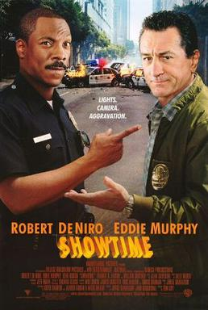
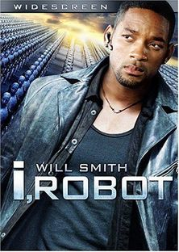
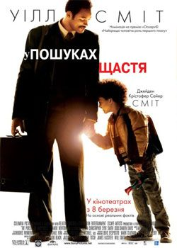

У ситкомі «Свіжий Принц із Бел-Ейр» Вілл Сміт грав роль підлітка схожого на самого себе під своїм сценічним
ім'ям —
Свіжий Принц.
Телесеріал, значною мірою завдяки комічному таланту Сміта, користувався великою популярністю американської
аудиторії
і вважається початком його акторської кар'єри.
Коли ситком закрили 1996 року Вілл Сміт продовжив співати реп вже як сольний виконавець.
Завдяки популярності в попередньому телесеріалі, того ж року його запросили на роль у фільмі «День незалежності»
(англ. Independence Day), де він зіграв драматичну роль пілота винищувача у боротьбі проти інопланетних
інтервентів.
Ця стрічка стала блокбастером і закріпила за ним репутацію не тільки як комічного, але як і драматичного актора.
Наступною відомою роллю стала роль Агента Джей у комічному фільмі «Люди у чорному» (англ. Men in Black).
Цей фільм став одним зі найпопулярніших у США й у всьому світі; Вілл Сміт зіграв і у сиквелі цього фільму, а
також у
декількох інших дуже популярних фільмах, таких як «Ворог держави», «Дикий, дикий Захід»
(Фільм із тріском провалився, проте звукова доріжка до нього знову очолила американські чарти), «Я робот», «Я
легенда».
-
Шоу починається
 -
Я, робот
 -
У гонитві за щастям
 -
Хенкок